Views, Representations and Color Mapping
The goal of visualization is to generate representations of the data in a visual form. In this chapter we will see different mechanisms available in ParaView to look at the data to gain insight into it.
Understanding Views
Views
When the ParaView application starts up, one sees a 3D viewport with an axes at the center. This is a View. In ParaView, Views are frames in which the data can be seen. There are different types of views. The default view that shows up is a 3D View which shows rendering of the geometry extracted from the data or volumes or slices in a 3D scene. You can change the default view Settings dialog (Edit | Settings (in case of Mac OS X, ParaView | Preferences)).
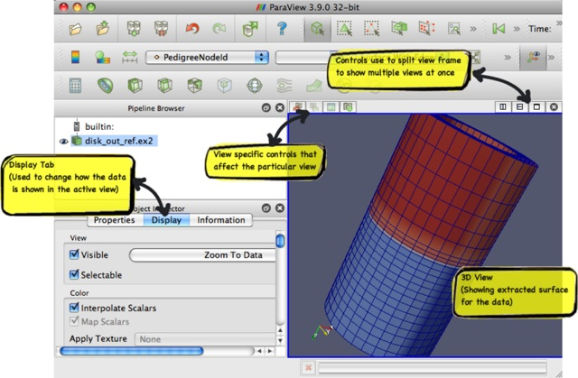There maybe parameters that are available to the user that control how the data is displayed e.g. in case of 3D View, the data can be displayed as wireframes or surfaces, you choose to change the color of the surface or use a scalar for coloring etc. All these options are known as Display properties and are accessible from the Display tab in the Object Inspector.
Since there can be multiple datasets shown in a view, as well as multiple views, the Display tabs shows the properties for the active pipeline object (changed by using the Pipeline browser, for example) in the active view.
Multiple Views
ParaView supports showing multiple views side by side. To create multiple views, simply use the controls on the top-right corner of the view to split the frame vertically or horizontally. You can even maximize a particular view to temporarily hide other views. Once a view-frame is split, you will see a list of buttons showing the different types of views that you can create to place in that view. Simply click the button to create the view of your choice.
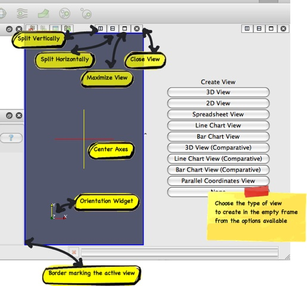Some filters, such as Plot Over Line may automatically split the view frame and show the data in a particular type of view suitable for the data generated by the filter.
Active View
Once you have multiple views, the active view if indicated by a colored border around the view frame. Several menus as well as toolbar buttons affect the active view alone. Also they may become enabled/disabled based on whether that corresponding action is supported by the active view.
The Display tab affects the active view. Similarly, the eye icon in the Pipeline Browser, next to the pipeline objects, indicates the visibility state for that object in the active view.
When a new filter or source or reader is created, it will be displayed by default in the active view, if possible (otherwise, if may create a new view).
Types of Views
In this section we will cover the different types of Views available in ParaView. For each view, we will talk about the controls available to change the view parameters using View Settings as well as the parameters associated with the Display Tab for showing data in that view.
3D View
3D View is used to show the surface or volume rendering for the data in a 3D world. This is the most commonly used view type.
When running in client-server mode, 3D View can render data either by bringing the geometry to the client and then rendering it there or by rendering it on the server (possibly in parallel) and then delivering the composited images to the client. Refer to the Client-Server Visualization chapter for details.
Interaction
Interacting with the 3D view will typically update the camera. This makes it possible to explore the visualization scene. The default buttons are as follows, they can be changed using the Application Settings dialog.
|
Modifier |
Left Button |
Middle Button |
Right Button |
|
|
Rotate |
Pan |
Zoom |
|
Shift |
Roll |
Rotate |
Pan |
|
Control |
Zoom |
Rotate |
Zoom |
This view supports selection. One can select cells or points either on the surface or those within a frustum. Selecting cells or points makes it possible to extract those for further inspection or label them etc. Details about data querying and selection can be found the Quantitative analysis chapter.
View Settings
The view settings dialog accessible through the Edit | View Settings menu or the tool button on the left-corner of the view is used to change the view settings per view.
General
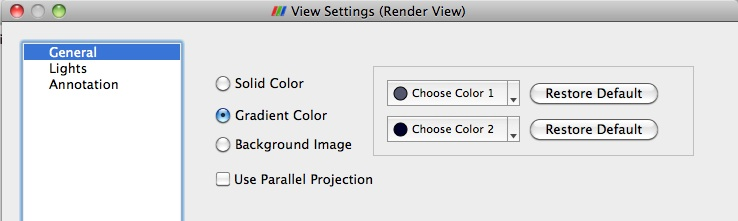This tab allows the user to choose the background color. One can use a solid color or a gradient or even a background image.
By default the camera uses perspective projection. To switch to parallel projection, check the "Use Parallel Projection" checkbox in this panel.
Lights
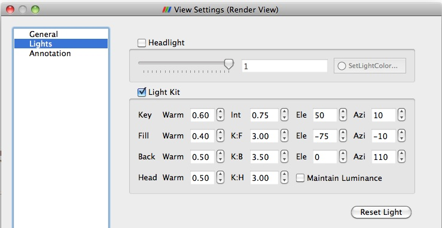The 3D View requires lights to illumniate the geometry being rendered in the scene. Once can control these lights using this pane.
Annotation
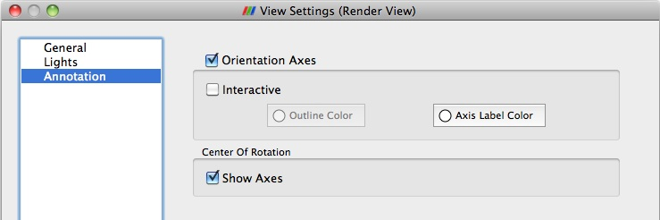The annotation pane enables controlling the visibility of the center axes and the orientation widget. Users can also make the orientation widget interactive, so that they can manually place the widget at location of their liking.
Display Properties
Users can control how the data from any source or filter is shown in this view using the Display tab. In this section we will cover the various options available to a user for controlling appearance of the rendering in the 3D view.
View
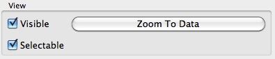
|
Name |
Usage |
|
Visible |
Checkbox used to toggle the visibility of the data in the view. If it disabled, it implies that the data cannot be shown in this view. |
|
Selectable |
Checkbox used to toggle whether the data gets selected when using the selection mechanism for selecting and sub-setting data. |
|
Zoom to Data |
Click this button to zoom the camera so that the dataset is completely fits within the viewport. |
Color
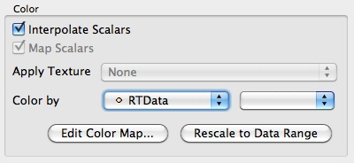The color group allows users to pick the scalar to color with or set a fixed solid color for the rendering.
|
Name |
Usage |
|
Interpolate Scalars |
If on, the scalars will be interpolated within polygons and the scalar mapping happens on per pixel basis. If off, then color mapping happens at points and colors are interpolated which is typically less accurate. This only affects when coloring with point arrays. Has no effect otherwise. This is disabled when coloring using a solid color. |
|
Map Scalars |
If the data array being color with can be directly interpreted as colors then one can uncheck this to not use any lookup table. Otherwise, when on, a lookup table will be used to map scalars to colors. This is disabled when the array is not of the type that can be interpreted as colors (i.e. vtkUnsignedCharArray). |
|
Apply Texture |
Makes is possible to apply a texture over the surface. This requires that the data has texture coordinates. One can use filters like Texture Map to Sphere, Texture Map to Cylinder or Texture Map to Plane to generate texture coordinates when not present in the data. To load a texture, select Load from the combo-box which will popup a dialog allowing you to choose an image. Otherwise pick from already loaded textures listed in the combo-box. |
|
Color By |
This enables coloring of the surface/volume. Either choose the array to color with or set the solid color to use. When volume rendering, solid coloring is not possible, one has to choose the data array to volume render with. |
|
Set solid color |
Used to set the solid color. This is available only when Color By is set to use Solid Color. ParaView defines a notion of a color palette consisting of different color categories. To choose a color from one of these predefined categories, click on the tiny arrow next to thus button. It will open up a drop down with options to choose from. If one uses a color from the palette, it possibly to globally change the color by changing the color palette e.g. for printing or for display on screen etc. |
|
Edit Color Map... |
One can edit the color-map or lookup table by clicking the Edit Color Map button. It's only shown when an array is chosen in the Color By combo-box. |
Slice
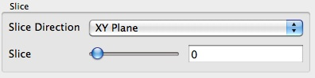The slice controls are available only for Image dataset (Uniform Rectilinear Grids) when the representation type is Slice. The representation type is controlled using the Style group on the Display tab. These allow the user to pick the slice direction as well as the slice offset.
Annotation
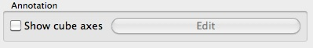Cube axes is a annotation box that can be used so show a scale around the dataset. Use the Show cube axes checkbox to toggle its visibility. You can further control the apperance of the cube axes by clicking Edit once the cube-axes is visible.

Style
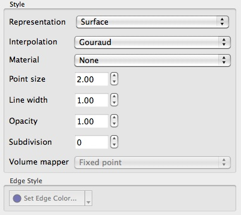
|
Name |
Usage |
|
Representation |
Use this to change how the data is represented i.e. as a surface, volume, wireframe, points, or surface with edges. |
|
Interpolation |
Choose the method used to shade the geometry and interpolate point attributes. |
|
Point Size |
If your dataset contains points/vertices, this adjust the diameter of the rendered points. It also affects the point size when Representation is Points. |
|
Line width |
If your dataset contains lines/edges, this scale adjust the width of the rendered lines. It also affects the rendered line width when Representation is Wireframe or Surface With Edges. |
|
Opacity |
Set the opacity of the dataset's geometry. ParaView uses hardware-assisted Depth peeling, whenever possible, to remove artifacts due incorrect sorting order of rendered primitives. |
|
Volume Mapper |
When Representation is Volume, this combo-box allows the user to choose a specific volume rendering technique. The techniques available change based on the type of the dataset. |
|
Set Edge Color |
This is available when Representation is Surface with Edgets. It allows the user to pick the color to use for the edges rendered over the surface. |
Backface Style
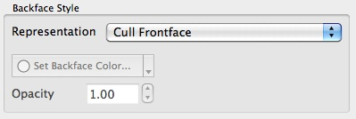This allows the user to define backface properties. In computer graphics, backface refers to the face of a geometric primitive with the normal point away from the camera. Users can choose to hide the backface or front face or specify different characteristics for the two faces using these settings.
Transformation
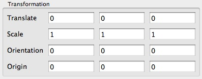These settings allow the user to transform the rendered geometry, without actually transforming the data. Note that since this transformation happens during rendering, any filters that you apply to this data-source, will still be working on the original, untransformed data. Use the Transform filter if you want to transform the data instead.
2D View
2D View is similar to 3D view except that it can only show slices from uniform grid datasets i.e. volume datasets or image datasets. The interaction is also limited to a 2D plane i.e. rotation is not available. Currently this view does not support selection. That will be supported in future releases. When one loads a 2D image, ParaView by default creates this view.
Since this view is same as the 3D view, it has the same features when it comes to client-server and parallel rendering.
Interaction
Interactions with this view update the camera. The default buttons are as follows, they can be changed using the Application Settings dialog.
|
Modifier |
Left Button |
Middle Button |
Right Button |
|
|
Pan |
Pan |
Zoom |
|
Shift |
Zoom |
Zoom |
Zoom |
|
Control |
Zoom |
Zoom |
Pan |
Unlike 3D view, this view currently does not support selection. However, that support will be added in future.
View Settings
The view settings dialog accessible through the Edit | View Settings menu or the tool button on the left-corner of the view is used to change the view settings per view.
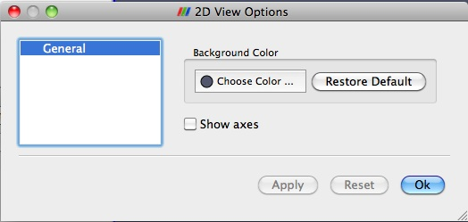The user can change the background color and toggle the visibility of the axes-box.
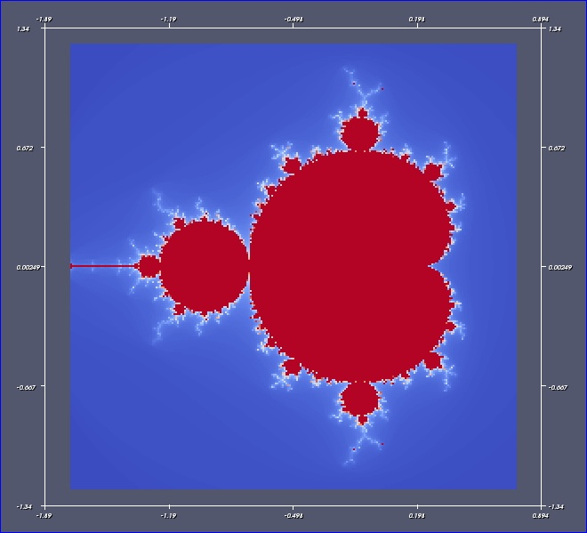
Display Properties
Display tab for this view is exactly same as the 3D View, except that some options may be unavailable such as changing of representation type.
Spreadsheet View
Spreadsheet View is used to inspect the raw data in a spreadsheet. When running in client-server mode, to avoid delivering the entire dataset to the client for displaying the spreadsheet (since the data can be very large), this view streams only visible chunks of the data to the client. As the user scrolls around the spreadsheet, new data chunks are fetched.
Unlike some other views, this view can only show one dataset at a time. For composite datasets, it shows only one block at a time. One can pick the block to show using the Display tab.
Interaction
As far as the usability is concerned, this view behaves exactly like typical spreadsheets shown in applications like Microsoft's Excel or Apple's Pages:
One can scroll up and down to inspect new rows.
One can sort any column by clicking on the header for the column. Repeated clicking on the column header toggles the sorting order. When running in parallel, ParaView uses sophisticated parallel sorting algorithms to avoid memory and communication overheads to sort large, distributed datasets.
One can double-click on a column header to toggle a mode in which only that column is visible. This reduces clutter when one is interested in a single attribute array.
One can click on rows to select the corresponding elements i.e. cells or points. This is not available when in "Show selected only mode" (explained later). Also, when one creates a selection in other views e.g. the 3D view, the rows corresponding to the selected elements will be highlighted.
Header
Unlike other views, Spreadsheet View has a header. This header provides quick access to some of the commonly used functionality in this view.

Since this view can only show one dataset at a time, one can quickly choose the dataset to show using the Showing combo-box.
One can choose the attribute type i.e. point attributes, cell attributes, to display using the Attribute combo-box.
Precision controls the number of digits to show after decimal point for floating point numbers.
The last push-button allows the user to enter the view in a mode where it only shows the selected rows. This is useful when one creates a selection using another view such as the 3D view and wants to inspect the details for the selected cells/points.
View Settings
Currently, no user settable settings are available for this view.
Display Properties
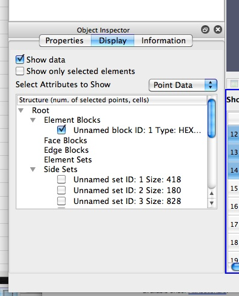The display properties for this view provide the same functionality as the header. Additionally, when dealing with composite datasets, the display tab shows a widget allowing the user to choose the block to display in the view.
Line Chart View
A traditional 2D line plot is often the best option to show trends in small quantities of data. A line plot is also a good choice to examine relationships between different data values that vary over the same domain.
Any reader, source, or filter that produces plottable data can be displayed in an XY Plot View. ParaView stores its plottable data in table (vtkTable). Using the display properties, users can choose which columns in the table must be plotted on the x and y axes.
As with the other view types, exactly what is displayed in the active XY Plot View is displayed by, and controllable with, the eye icons in the Pipeline Browser panel. When an XY Plot View is active, only those filters that produce plotable output have eye icons.
The XY Plot View is the preferred View type for the Plot over Line, Plot Point over Time, Plot Cell over Time, Plot Field Variable over Time, and Probe Location over Time filters. Creating any one of these filters will automatically create an XY Plot View for displaying its output. Figure 3 shows a plot of the data values within a volume as they vary along three separate paths. The top curve comes from the line running across the center of the volume, where the largest values lie. The other two curves come from lines running near the edges of the volume.
Unlike the 3D and 2D render view, the charting views are client-side views i.e. they deliver the data to be plotted to the client. Hence ParaView only allows results from some standard filters such as Plot over Line in the line chart view by default. However it is also possible to plot cell or point data arrays for any dataset by apply the Plot Data filter.
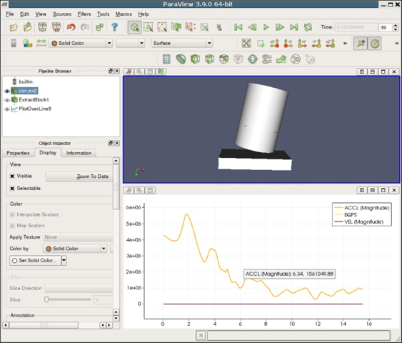
Interaction
Line chart view supports the following interaction modes:
Right-click and drag to pan
Left-click and drag to select
Middle-click and drag to zoom to region drawn.
Hover over any line in the plot to see the details for the data at that location.
To reset the view, use the Reset Camera button in the Camera Toolbar.
View Settings
The View Settings for Line Chart enable the user to control the appearance of the chart including titles, axes positions etc. There are several pages available in this dialog. The General page controls the overall appearance of the chart, while the other pages controls the appearance of each of the axes.
General Settings Page
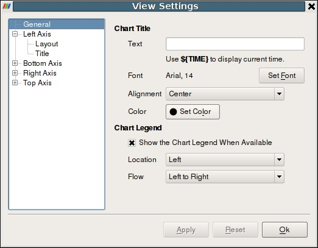This page allows users to change the title and legend. One can change the title text. To show the current animation time in the title text, simply use the keyword ${TIME}. Users can further change the font and alignment for the title.
This page also enable changing the appearance and positioning of the legend.
Axis Settings Page
This page allows changing the properties of a particular axis. Four pages are provided for each of the axes. By clicking on the name of the axis, one can access the settings page for the corresponding axes.
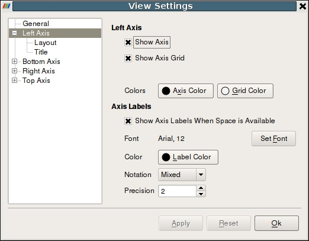
Axis
Show Axis : controls the axis visibility.
Show Axis Grid: controls whether a grid is to be drawn perpendicular to this axis.
Colors: enables changing the axis as well as the grid color.
Labels
Show Axis Labels When Space is Available : controls label visibility along this axis.
Font and Color: enables changing the label font and color.
Notation: allows user to choose between Mixed, Scientific and Fixed point notations for numbers.
Precision: controls precision after '.' in Scientific and Fixed notations.
Axis Layout Page
This page allows the user to change the axis range and scale.
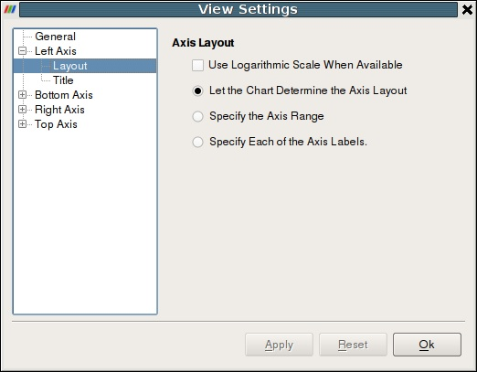
Use Logarithmic Scale When Available: check this to use a log scale unless the data contains numbers <= 0.
Let the Chart Determine the Axis Layout: pick this radio button to let the chart use the optimal range and spacing for this axis.
Specify the Axis Range: pick this radio button to specify the axis range explicitly. The labels are auto-placed within this range.
Specify Each of the Axis Labels: pick this radio button to specify each label location on axis explicitly.
Axis Title Page
This page allows the user to change the title for the axis. One can change the text as well as color and font for the axis title.
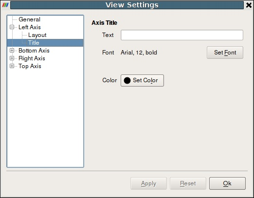
Display Properties
Display Properties for the Line Chart view allow the user to choose what arrays are plotted along which of the axes as well as the appearance for each of the lines such as its color, thickness and style.

Attribute Mode : pick which attribute arrays to plot i.e. point arrays or cell arrays etc.
X Axis Data : controls the array to use as the X-axis.
Use Array Index From Y Axis Data : when checked results in ParaView simply using the index in data-array plotted on Y as the x axis.
Use Data Array: when checked the user can pick an array to be interpreted as the x co-ordinate.
Line Series : controls the properties of each of the arrays plotted along the y-axis.
Variable : check the variable to be plotted.
Legend Name : click to change the name used in the legend for this array.
Select any of the series in the list to change following properties for that series. One can select multiple entries to change multiple series.
Line Color : controls the color for the series.
Line Thickness : controls the thickness for the series.
Line Style : controls the style for the line.
Marker Style : markers can be placed at every data point. This controls the style used for those markers.
Chart Axes :
Bar Chart View
Traditional 2D graphs present some types of information much more readily than 3D renderings do; they are usually the best choice for displaying one and two dimensional data. The Bar Chart View is very useful for examining the relative quantities of different values within data, for example.
The Bart Chart View is used most frequently to display the output of the Histogram filter. This filter divides the range of a component of a specified array from the input data set into a specified number of bins, producing a simple sequence of the number of values in the range of each bin. A Bar Chart is the natural choice for displaying this type of data. In fact the Bar Chart View is the preferred View type for the Histogram filter. Filters that have a preferred View type will create a View of the preferred type whenever they are instantiated.
When the new View is created for the histogram filter, the pre-existing 3D view is made smaller to make space for the new Chart View. The Chart View then becomes the Active View, which is denoted with a red border around the View in the display area. Clicking on any View window makes it the active View. The contents of the Object Inspector and Pipeline Browser panels change and menu items are enabled or disabled whenever a different View becomes active to reflect the Active View’s settings and available controls. In this way, you can independently control numerous Views. Simply make a View active, and then use the rest of the GUI to change it. By default, the changes you make will only affect the active View.
As with the 3D View, the visibility of different datasets within a Bar Chart View is displayed and controlled by the eye icons in the Pipeline Browser. The Bar Chart View can only display datasets that contain chartable data, and when a Bar Chart View is active, the Pipeline Browser will only display the eye icon next to those datasets that can be charted.
ParaView stores its chartable data in 1D Rectilinear Grids, where the X locations of the grid contain the bin boundaries, and the cell data contain the counts within each bin. Any source or filter that produces data in this format can be displayed in the Bar Chart View. Figure 46 shows a histogram of the values from a slice of a data set.
The Chart View’s Edit View Options dialog allows you to create labels, titles, and legends for the chart and to control the range and scaling of each axis.
The Interaction, Display Properties as well as View Settings for this view and similar to those for the Line Chart.
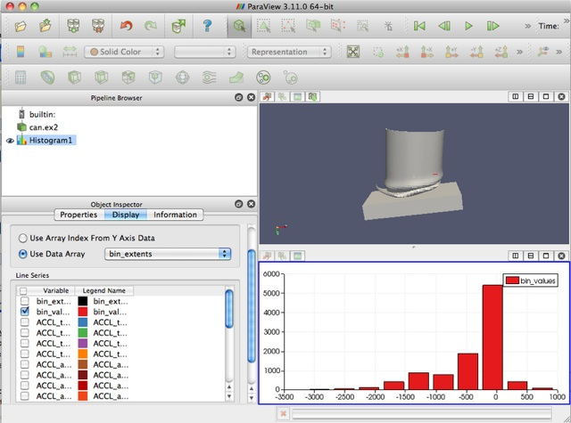
Color Transfer Functions
The interface for changing the color mapping and properties of the scalar bar is accessible from the Display tab of the Object Inspector. Pressing the Edit Color Map button displays the interface for manipulating the color map and scalar bar as shown below.
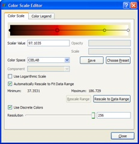
Figure 1. Color Map Controls
At the top of the Color Scale tab of the Color Scale Editor dialog is an editor for mapping scalar values to colors (for surface rendering) and also to opacity (for volume rendering). The scalar range of this color map editor is shown below the Automatically Rescale to Fit Data Range check box. The leftmost sphere corresponds to the minimum scalar value, and the rightmost one corresponds to the maximum. Any interior nodes correspond to values between these two extremes. New nodes may be added to the color editor by left-clicking in the editor; this determines the scalar value associated with the node, but that value may be changed by typing a new value in the Scalar Value text box below the color map editor or by clicking and dragging a node. (The scalar value for a particular node may not be changed such that it is less than that for a node left of it or greater than that for a node right of it.) When volume rendering, the vertical height of a node indicates its opacity. For surface rendering, opacity is determined for an entire data set, not based on the underlying scalar values.
When a node in the color map editor is clicked, it becomes highlighted (i.e., drawn larger than the other spheres in the editor). In the example above, the second node from the left has been selected. Clicking again on the selected node displays a color chooser from which you may select a new color for the node. Pressing the ‘d’ or Delete key while a node is selected removes that node from the editor. Only the endpoint nodes may not be deleted.
Below the color map editor (or transfer function editor, for volume rendering) is a set of three text boxes for changing the scalar value, opacity, and scale associated with a given node. Only the scalar value is associated with surface rendering. The scalar values at the endpoints may only be changed if the Automatically Rescale to Fit Data Range check box (discussed later in this section) is unmarked. When volume rendering, you may also specify the opacity and scale per node in the editor. In volume rendering, the opacity is accumulated as you step through the volume being rendered. The Scale value determines the unit distance over which the opacity is accumulated.
The controls below the set of three text boxes specify the color space and any color map preset you wish to save or use. The color spaces available are RGB (red, green, blue), HSV (hue, saturation, value), Wrapped HSV, and CIELAB (a more perceptually linear color space). The color space determines how the colors are interpolated between specified values; the colors at the color map (or transfer function) editor nodes will remain the same regardless of the color space chosen. If wrapped HSV is used, the interpolation will use the shortest path in hue, even going through the value hue = 0. For non-wrapped HSV, the hue interpolation will not pass through 0. (A hue of zero sets the color to red.)
In addition to choosing the color space and modifying the color map / transfer function nodes, you may also create and load preset color scales. (When volume rendering, only the color map is stored; the scalar-to-opacity mapping is not.) To store your current settings as a preset, click the Save button. In the dialog box that appears, you may enter a name for your new preset. By default, the scalar values from the data array being used are stored in the preset. If you wish these values to be normalized between 0 and 1, press the Normalize button.
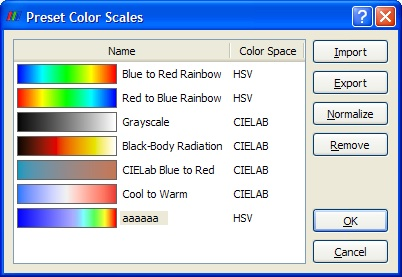
Figure 2. Dialog for choosing color scale presets.
Any presets you save, in addition to the default ones provided by ParaView, are available by pressing the Choose Preset button, causing the dialog shown below to be displayed. Selecting a preset and clicking OK causes the current color map to be set to the chosen preset. Any user-defined presets may be normalized (as discussed above) or removed from the list of presets entirely using the Normalize and Remove buttons, respectively. (The default presets are already normalized and may not be removed from the application.)
Any of the color scale presets may be exported to a file using the Export button in the above dialog. The resulting file(s) may then be copied to another computer for use with ParaView on a different machine. In order to load presets that are stored in such files, press the Import button on the above dialog, and navigate to the desired color preset file.
If the current data set is colored by an array of vectors, the Component menu will be enabled. It determines whether the data is colored by a single vector component (X, Y, or Z) or by the vector’s Magnitude (the default). If the data is colored by a single-component (scalar) array, then the Component menu is disabled.
If Use Logarithmic Scale is checked, then instead of the scalar values in the data array being used directly to determine the colors, the base-10 logarithm of the data array values is computed, and the resulting value is used for extracting a color from the color map. If the data array contains values for which a logarithm would produce invalid results (i.e., any values less than or equal to 0), the range for the color map is changed to [0, 10] so that the logarithm produces valid results.
By default, any data attribute that has been used to color a data set currently loaded in ParaView whose name and number of components match that of the array selected in the Color by menu contributes to the range of the color map. To change this behavior, first uncheck the Automatically Rescale to Fit Data Range check box. (This ensures that the range of the color map is not reset when the range of the data attribute changes.) The minimum and maximum values of the color map can be overridden by pressing the Rescale Range button, entering different Minimum and Maximum values in the dialog that appears, and pressing Rescale; this rescales all the nodes in the color map so that the scalar values lie at the same normalized positions. Alternatively, you may modify the scalar values of any node (including the endpoints if Automatically Rescale to Fit Data Range is off) by clicking a node to highlight it and typing a new value in the Scalar Value entry box. By changing the minimum and maximum color map values, it is possible to manually specify what range of data values the color map will cover. Pressing the Rescale to Data Range button on the Color Scale tab of the Color Scale Editor sets the range to cover only the current data set.
If Use Discrete Colors is checked, the Resolution slider at the bottom of the dialog specifies the number of colors to in the color map. The scale ranges from 2 to 256 (the default). The fewer the number of colors, the larger the range each color covers. This is useful if the data attribute has a small number of distinct values or if larger ranges of the array values should be mapped to the same color.
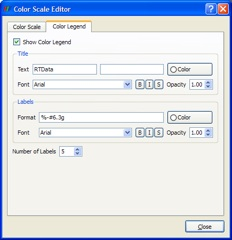
Figure 3. Scalar Bar controls